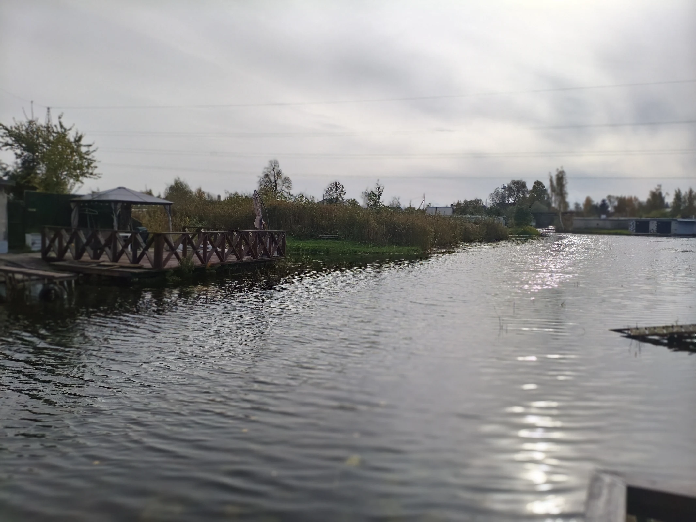
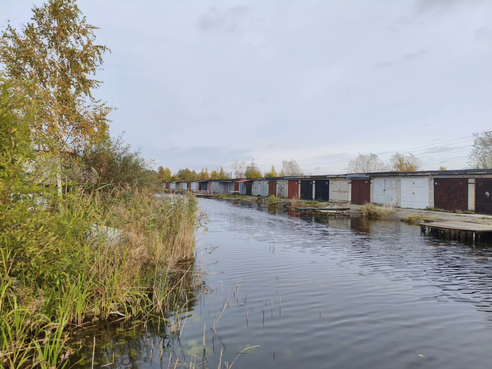

У каждого берега — своя история.
У нашего — целая жизнь.

Здесь у города
другой ритм.
На берегу Нарвского водохранилища есть особый мир: каналы, лодочные гаражи, маленькие причалы и знакомые лица. Это Кулгу — Нарвская Венеция.
Здесь выходят на воду, встречаются с соседями, мастерят и делятся историями. Мы собираем фотографии и воспоминания, рассказываем о событиях и знакомим с людьми, которые делают это место живым.
Гаражи, причалы и жизнь у воды.
Свежий взгляд на Кулгу: лодочные гаражи тянутся вдоль канала, а вода соединяет соседей и берега.
Смотреть свежие фотографии ↗

Место складывается
из людей.
Из первых выходов на лодке. Из разговоров у гаража. Из лета, которое помнишь всю жизнь. В наших фотографиях — большая история маленького места.
Заглянуть в фотоархив ↗Поводы быть вместе.
Архив мероприятий ↗Сохраняем то, что нас объединяет.
Встречи, совместные дела и праздники у воды. Мы собираем истории прошедших мероприятий — с фотографиями и воспоминаниями участников.
У вас тоже есть
история Кулгу?
Старый снимок, тёплое воспоминание или идея для встречи. Поделитесь — сохраним это вместе.
Написать нам ↗